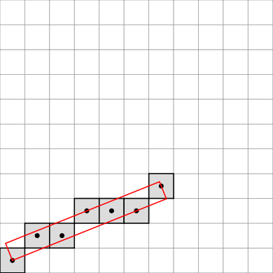
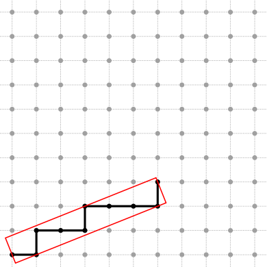
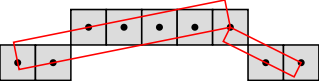
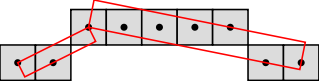
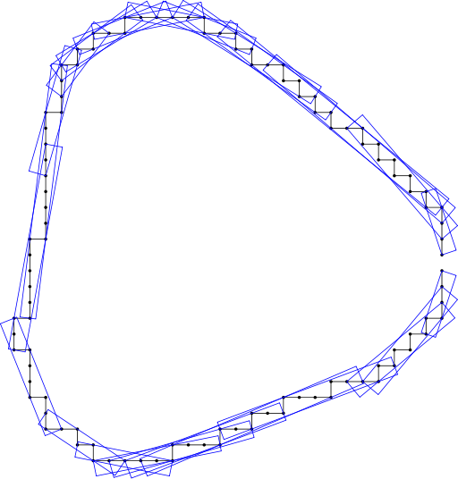
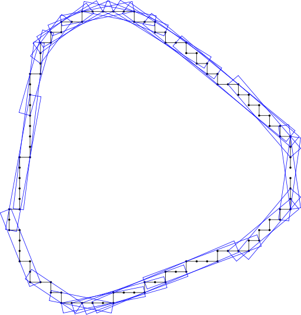

|
DGtal 0.3.0
|
This part of the manual describes how to decompose a digital curve into geometric primitives such as digital straight segments (DSS for short), thick segments, convex and concave parts, digital circular arcs, etc.
The 2d geometry kernel of DGtal can decompose any given digital curve in a very generic framework. Indeed, the more abstract concept of sequence of elements replaces the one of digital curve. Note that we use the terme sequence because the order matters. Elements are abstract objects. They can be points of course, but also more sophisticated geometric objects such as straight line segments, squares, etc. They can also be letters (as in the Freeman representation of a connected digital curve) or any other user-defined object. What is requiered is that the sequence provides an iterator that can be used to access to the elements in order.
In a geometric framework, the sequence may be defined as a STL vector of 2D points as follow:
typedef PointVector<2,int> Point; //element type typedef std::vector<Point> DigitalCurve; //sequence type typedef DigitalCurve::iterator Iterator; //iterator type
In a word combinatorics framework, the sequence may be defined as a STL string as follow:
typedef std::string Word; //sequence type typedef Word::iterator Iterator; //iterator type
A primitive is usually defined as a specific digital object. In order to recall that we only focus on parts of digital curves (viewed as sequences of elements), the term segment is used instead of primitive. More precisely, a segment is a subsequence having a given property, which can be built from conjunctions and disjunctions of other properties. However, the resulting property has to be true for any subsequence of any segment. For instance, the properties "to be a 4-connected DSS" or "to be a balanced word" can define a segment, but "to contain at least k elements (k > 1)" cannot define a segment because it does not hold for subsequences of strictly less than k elements.
Since the goal is to decompose a sequence into segments, we focus on their detection along the sequence. Detection algorithms should verify the concept CSegmentComputer. A CSegmentComputer model should define the following inner type:
In addition to the default and copy constructors, it should also define the following methods :
The detection is incremental. A segment is initialised at a starting point and then can be extended to the next point if the property still holds.
A model of CSegmentComputer is the class ArithmeticalDSS, devoted to the dynamic recognition of DSSs, defined as a sequence of connected points (x,y) such that  (see Debled and Reveilles, 1995).
(see Debled and Reveilles, 1995).
Here is a short example of how to use this class in the 8-connected case:
typedef PointVector<2,int> Point; //element type typedef std::vector<Point> DigitalCurve; //sequence type typedef DigitalCurve::iterator Iterator; //iterator type typedef ArithmeticalDSS<Iterator, int, 8> DSS8; //segment computer type DigitalCurve contour; //instance of sequence contour.push_back(Point(0,0)); //input elements contour.push_back(Point(1,1)); contour.push_back(Point(2,1)); contour.push_back(Point(3,2)); contour.push_back(Point(4,2)); contour.push_back(Point(5,2)); contour.push_back(Point(6,3)); // Add points while it is possible Iterator i = contour.begin(); DSS8 theDSS8; //instance of the segment computer theDSS8.init(i); //initialisation do { i++; } while ( (i!=contour.end()) &&(theDSS8.extend(i)) ); //extension of the segment
Here is a short example of how to use this class in the 4-connected case:
typedef PointVector<2,int> Point; //element type typedef std::vector<Point> DigitalCurve; //sequence type typedef DigitalCurve::iterator Iterator; //iterator type typedef ArithmeticalDSS<Iterator, int, 4> DSS4; //segment computer type DigitalCurve contour; //instance of sequence contour.push_back(Point(0,0)); //input elements contour.push_back(Point(1,0)); contour.push_back(Point(1,1)); contour.push_back(Point(2,1)); contour.push_back(Point(3,1)); contour.push_back(Point(3,2)); contour.push_back(Point(4,2)); contour.push_back(Point(5,2)); contour.push_back(Point(6,2)); contour.push_back(Point(6,3)); // Add points while it is possible Iterator i = contour.begin(); DSS4 theDSS4; //instance of the segment computer theDSS4.init(i); //initialisation do { i++; } while ( (i!=contour.end()) &&(theDSS4.extend(i)) ); //extension of the segment
The resulting DSSs of the two previous pieces of code are drawing below:

8-connected DSS drawn with the paving mode |

4-connected DSS drawn with the grid mode |
See file examples/geometry/ArithmeticalDSS.cpp for the whole code and see dgtalboard.dox for the drawing mechanism.
A given sequence contains a finite set of segments. A decomposition is a subset of the whole set of segments, such that no segment contains another segment of the subset. By definition, the segments of a decomposition can be ordered (according to the position of their first element for instance).
Decomposition algorithms should verify the concept CDecomposition. A CDecomposition model should define the following inner type:
It should also define a constructor taking as input parameters:
The first and simplest decomposition is the greedy one: from a starting point, extend a segment while it is possible, get the last point of the resulting segment (or the next point) and iterate. This decomposition is implemented in the class GreedyDecomposition.
In the short example below, a digital curve stored in a STL vector is segmented into 8-connected DSSs whose parameters are sent to the standard output.
typedef PointVector<2,int> Point; //element type typedef std::vector<Point> DigitalCurve; //sequence type typedef DigitalCurve::iterator Iterator; //iterator type typedef ArithmeticalDSS<Iterator, int, 8> DSS; //segment computer type typedef GreedyDecomposition<DSS> Decomposition; //decomposition type DigitalCurve curve; //instance of a sequence curve.push_back(Point(1,1)); //input elements curve.push_back(Point(2,1)); curve.push_back(Point(3,2)); curve.push_back(Point(4,2)); curve.push_back(Point(5,2)); curve.push_back(Point(6,2)); curve.push_back(Point(7,2)); curve.push_back(Point(8,1)); curve.push_back(Point(9,1)); DSS dssRecognition; //instance of segment computer Decomposition theDecomposition( curve.begin(), curve.end(), dssRecognition, false); //instance of decomposition Decomposition::ConstIterator i = theDecomposition.begin(); for ( ; i != theDecomposition.end(); ++i) { //iterate on the segments DSS currentSegment(*i); trace.info() << currentSegment << std::endl; //standard output }
If you want to get the segmentation of the digital curve when it is scanned in the reverse way, you can use the reverse iterator of the STL vector:
... typedef Sequence::reverse_iterator Iterator; //iterator type ... Decomposition theDecomposition( curve.rbegin(), curve.rend(), dssRecognition, false); //instance of decomposition ...
The resulting segmentations are shown in the figures below:

segmented from left to right |

segmented from right to left |
See file examples/geometry/greedy-dss-decomposition.cpp for another example using the class FreemanChain.
A unique and richer decomposition is the set of maximal segments (a maximal segment is a segment that cannot be contained in a greater segment). This decomposition is implemented in the class MaximalSegments.
In the previous decomposition code, instead of the line:
typedef GreedyDecomposition<DSS> Decomposition; //decomposition type
it is enough to write the following line:
typedef MaximalSegments<DSS> Decomposition; //decomposition type
to get the following figure:
maximal segments
Note that a same digital curve can be processed as open or closed as illustrated below:

processed as open |

processed as closed |
When an open digital curve (the first and last points are not connected) is processed as a closed one, it is merely processed as a closed but disconnected curve just as any other disconnected curve. As shown below, two consecutive maximal segments may not intersect.
Decomposition of a disconnected curve into maximal 4-connected DSSs
TODO brief description of the implementation
See file examples/geometry/convex-and-concave-parts.cpp for an example of how to use maximal DSSs to decompose a digital curve into convex and concave parts.
 1.7.3
1.7.3